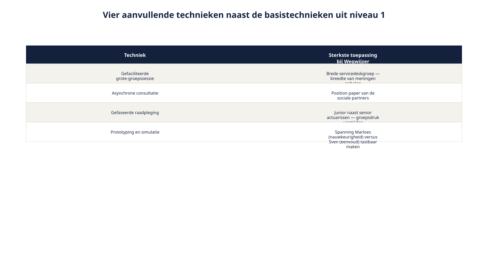

Cursus Requirements engineering · Niveau 2 (CPRE Advanced Level) · Deel 13 van 30
Techniekkeuze op programmaniveau.
In deel 12 bracht u de belanghebbenden rond Wegwijzer in kaart — sociale partners, deelnemersraad, en de rest van een groep die veel veelstemmiger is dan bij het Nabestaandenloket. Dit deel gaat over wat die veelstemmigheid betekent voor uw gereedschap: de vier elicitatietechnieken uit niveau 1 volstaan niet meer zodra de groep groter, formeler en trager wordt dan één workshop aankan. U leert wanneer dat omslagpunt ligt, welke aanvullende technieken er zijn, en hoe u ze combineert tot een gefaseerd plan — met Marloes Huismans actuariële rekenregels als scherpste testcase voor spanningsveld 2.
8secties
±1u40leestijd + werkboek
7controlevragen
4aanvullende technieken §13.3
Positionering. Deze cursus is een voorbereiding op de CPRE Advanced Level-certificering van IREB en is uitdrukkelijk geen vervanging van het officiële syllabus- en examenmateriaal van IREB, te raadplegen via ireb.org.
Deel 12 bracht de stakeholderanalyse rond Wegwijzer naar een gevorderd niveau: naast de interne afdelingen spelen sociale partners en een kritische deelnemersraad mee, en geen van beide groepen valt onder het gezag van Ruben Doornbos. Dat is spanningsveld 1 — veelstemmigheid — zoals dat in deel 11 als rode draad van dit niveau is neergezet. Dit deel gaat over de consequentie daarvan voor het elicitatiewerk zelf: als de groep belanghebbenden groter, formeler en trager is dan bij het Nabestaandenloket, houdt de aanpak uit niveau 1 — één workshop met de belangrijkste mensen tegelijk — niet meer stand.
De scherpste testcase in dit deel is spanningsveld 2 — de complexiteit van de rekenregels. De actuariële rekenregels achter risicoprofiel en scenario's zijn aanzienlijk complexer dan de correctie-beslistabel uit niveau 1, en moeten van meet af aan goed worden vastgelegd. Dat vraagt een andere, zorgvuldiger gekozen techniek dan een generieke workshopvraag aan Marloes Huisman, de actuarieel adviseur die vereenvoudiging wantrouwt. Dezelfde logica speelt, in mindere mate, bij spanningsveld 4 — twee kloksnelheden: sommige belanghebbenden hebben simpelweg meer tijd nodig dan een sprintritme toelaat.
Aan het eind van dit deel kunt u:
herkennen wanneer de vier basistechnieken uit niveau 1 niet meer volstaan, en waarom;
aanvullende technieken toepassen: gefaciliteerde grote-groepssessies, asynchrone consultatie, gefaseerde raadpleging, en prototyping voor complexe inhoud;
een techniekkeuze maken op basis van groepsgrootte, formaliteit, benodigde mate van consensus, tijdsdruk en inhoudelijke complexiteit;
een gefaseerd elicitatieplan opstellen dat meerdere technieken combineert;
de techniekkeuze aanpassen aan het tempo van een belanghebbendengroep, in plaats van andersom.
02
De casus: de workshop die een ramp werd
⏱ 10 min
Ruben plant, met de stakeholderkaart uit deel 12 in de hand, een enkele workshop met alle belangrijke belanghebbenden tegelijk — precies zoals dat bij het Nabestaandenloket met Wilma en Faisal werkte. Het loopt mis. Veertien deelnemers, waarvan de helft nauwelijks aan het woord komt.
Hans Reitsma, halverwege de sessie: "Ik kan hier niets toezeggen namens de sociale partners. Dit gaat terug naar ons gremium, en dat komt pas over drie weken weer bijeen."
Marloes Huisman, kort daarna, tegen Sven Bakker: "Als je dat zo versimpelt, klopt de uitkomst niet meer voor een deelnemer met een afwijkend scenario."
Sven: "En als ik het niet versimpel, snapt niemand meer wat hij ziet."
Er is geen tijd om dat welles-nietes structureel te bespreken — de klok tikt door voor de volgende agendapunt. Aan het eind van de workshop heeft Ruben meer vragen dan antwoorden, en drie belanghebbenden voelen zich niet gehoord.
De les is niet dat workshops niet werken. De les is dat één techniek voor iedereen tegelijk — die bij het Nabestaandenloket goed werkte — op deze schaal, met deze diversiteit aan mandaat en tempo, niet meer volstaat.
Controlevraag
Uit Werkboek deel 13, Opdracht 13.1 — Wat ging er mis in de mislukte workshop?
1Benoem minstens drie afzonderlijke oorzaken van waarom de workshop niet werkte, en koppel elke oorzaak aan een van de drie factoren uit paragraaf 13.2 (schaal, formaliteit, afstand).Toon antwoord
Schaal: veertien deelnemers is te groot voor een workshop; de helft komt nauwelijks aan het woord. Formaliteit: Hans Reitsma kan ter plekke niets toezeggen namens de sociale partners — hun besluitvorming volgt een eigen, langzamer ritme. (Impliciet, buiten de driedeling om): het welles-nietes tussen Marloes en Sven vraagt een andere aanpak — bijvoorbeeld prototyping — dan een generieke workshopdiscussie kan bieden; dit is strikt genomen geen van de drie factoren uit §13.2 maar een van de vijf uit §13.4 (complexiteit). Een goed antwoord signaleert dat de indelingen in dit deel hulpmiddelen zijn, geen sluitende classificaties.
03
Wanneer niveau-1-technieken niet meer volstaan
⏱ 14 min
Drie factoren maken dat de vier basistechnieken uit niveau 1 (interview, workshop, documentanalyse, observatie) op zichzelf tekortschieten op programmaniveau.
Schaal
Een workshop werkt goed met vier tot acht deelnemers. Met veertien of meer wordt de dynamiek onbeheersbaar: stille stemmen verdwijnen nog sterker — een zwakte van de workshop die in niveau 1 al werd benoemd — en de tijd per belanghebbende daalt tot bijna niets.
Formaliteit
Sommige belanghebbenden — met name groepen met een intern mandaatproces, zoals de sociale partners — kunnen niet ad-hoc, ter plekke, iets toezeggen. Hun tempo wordt bepaald door hun eigen interne besluitvormingsritme, niet door de planning van het Wegwijzer-team.
Afstand
Belanghebbenden kunnen geografisch of organisatorisch verspreid zijn, met beperkte gezamenlijke beschikbaarheid. Dat maakt een enkele, synchrone sessie voor iedereen tegelijk soms praktisch onmogelijk, los van de vraag of het inhoudelijk wenselijk zou zijn.
Figuur 13-1 — de drie factoren met, voor elk, welke belanghebbende(n) uit Wegwijzer erdoor geraakt worden
Geen van deze drie factoren maakt de niveau-1-technieken overbodig. Ze maken duidelijk dat er aanvullend gereedschap nodig is om ze op deze schaal effectief in te zetten.
04
Vier aanvullende technieken
⏱ 16 min
Gefaciliteerde grote-groepssessie
Voor het ophalen van brede input van een grotere groep zonder dat de sessie in chaos verzandt: een externe of onafhankelijke facilitator leidt de sessie met een vaste structuur — bijvoorbeeld eerst individueel en stil ideeën noteren, dan in kleine subgroepjes clusteren (affinity mapping), pas daarna plenair bespreken. Dit voorkomt dat de eerste, hardste stem de hele sessie kleurt.
Wanneer geschikt: een grote, redelijk gelijkwaardige groep — bijvoorbeeld een brede groep medewerkers van de servicedesk die met Wegwijzer gaan werken — waarbij u juist de breedte van meningen wilt, niet slechts een paar dominante stemmen.
Asynchrone consultatie
Voor belanghebbenden die tijd nodig hebben om intern te overleggen, of die geografisch verspreid zijn: een schriftelijk verzoek om input, met een duidelijke vraag en een redelijke deadline — bijvoorbeeld een position paper opvragen bij de sociale partners in plaats van te verwachten dat Hans Reitsma ter plekke antwoord geeft.
Wanneer geschikt: formele groepen met een eigen intern besluitvormingsritme, of situaties waarin gelijktijdige beschikbaarheid niet haalbaar is.
Gefaseerde raadpleging
Voor onderwerpen waar de meningen sterk uiteenlopen en een directe groepssessie het risico loopt dat de zwakste of minst zekere stem wordt overstemd: eerst individueel, onafhankelijk van elkaar, standpunten ophalen; deze geanonimiseerd terugkoppelen aan de hele groep; een tweede ronde waarin iedereen, met kennis van de andere standpunten, zijn positie kan bijstellen; herhalen tot de meningen convergeren of de resterende verschillen duidelijk en beargumenteerd zijn.
Wanneer geschikt: onderwerpen met een reëel risico op groepsdruk of hiërarchie-effecten — bijvoorbeeld wanneer junior medewerkers naast senior actuarissen aan tafel zitten en hun mening anders zouden inslikken in een directe sessie.
Prototyping en simulatie
Voor complexe inhoud die moeilijk in woorden alleen te bespreken is: een interactief, snel gebouwd prototype van (een deel van) Wegwijzer voorleggen, en belanghebbenden er samen doorheen laten lopen. Dit dwingt misverstanden vroeg naar boven — precies zoals een mockup in niveau 1 werd gebruikt om te valideren, nu ingezet als elicitatietechniek voor onderwerpen die zich lastig laten verwoorden.
Wanneer geschikt: de interactie tussen actuariële nauwkeurigheid en begrijpelijke presentatie — precies het onderwerp waar Marloes en Sven structureel over botsen. Een prototype laat beiden concreet zien wat een gekozen aanpak in de praktijk betekent, in plaats van erover te blijven praten in abstracte termen.

Figuur 13-2 — vier aanvullende technieken naast de vier basistechnieken uit niveau 1, elk met hun sterkste toepassing bij Wegwijzer
Controlevragen
Uit Werkboek deel 13, Opdracht 13.2 — Techniek kiezen (vier situaties)
1Een brede groep servicedeskmedewerkers (twaalf personen) moet input geven over welke vragen deelnemers waarschijnlijk aan de balie blijven stellen, ook als Wegwijzer live is. Welke techniek, en waarom?Toon antwoord
Gefaciliteerde grote-groepssessie. Grote, relatief gelijkwaardige groep; u wilt juist de breedte van input, niet slechts een paar stemmen.
2Het fondsbestuur moet formeel akkoord geven op de definitieve set risicoprofielen — een besluit dat via de bestuursvergadering loopt. Welke techniek, en waarom?Toon antwoord
Asynchrone consultatie (gevolgd door het formele bestuursbesluit zelf, buiten RE-technieken om). Hoge formaliteit, eigen besluitvormingsritme — een position paper of voorstel vooraf is passender dan een ad-hoc sessie.
3Een groep van vijf actuarissen en twee junior analisten heeft uiteenlopende meningen over hoe voorzichtig de scenario-berekeningen moeten zijn; de junior analisten zijn zichtbaar terughoudend in het bijzijn van hun senior collega's. Welke techniek, en waarom?Toon antwoord
Gefaseerde raadpleging. Risico op hiërarchie-effecten; eerst individueel, dan geanonimiseerd terugkoppelen, beschermt de junior stemmen. Een gefaciliteerde sessie structureert de dynamiek weliswaar beter dan een ongeleide workshop, maar het specifieke risico van hiërarchie tussen senior en junior wordt het scherpst afgevangen door eerst een individuele, anonieme ronde.
4Marloes en Sven moeten samen bepalen hoe een risicoprofiel-uitkomst wordt gepresenteerd zonder de onderliggende nauwkeurigheid te verliezen. Welke techniek, en waarom?Toon antwoord
Prototyping. Complexe, moeilijk in woorden te vatten interactie tussen nauwkeurigheid en presentatie — een concreet prototype maakt het bespreekbaar.
05
Een techniekkeuze maken
⏱ 12 min
Vijf factoren bepalen, net als bij de RE-strategie in deel 11, welke techniek — of combinatie van technieken — passend is.
Factor
Vraag
Groepsgrootte
Hoeveel mensen zijn relevant voor dit onderwerp?
Formaliteit/mandaat
Kan deze groep ter plekke iets toezeggen, of is er een eigen besluitvormingsritme?
Benodigde consensus
Moet iedereen het eens worden, of is een overzicht van posities voldoende?
Tijdsdruk
Hoeveel tijd is er, en hoe verhoudt die zich tot het ritme van de belanghebbenden?
Inhoudelijke complexiteit
Is dit onderwerp in woorden te bespreken, of vraagt het een concreter hulpmiddel?
Geen van deze factoren wijst automatisch naar één techniek. Ze werken als een profiel: een onderwerp met veel belanghebbenden, hoge formaliteit en hoge complexiteit — zoals het uiteindelijke aantal risicoprofielen — vraagt om een combinatie, niet om één perfecte techniek.
Verband met spanningsveld 2
Bij de rekenregels achter risicoprofiel en scenario's scoort de laatste factor — inhoudelijke complexiteit — het hoogst van de vijf. Dat is precies waarom deze rekenregels een individueel interview met Marloes vragen (fase 2 in paragraaf 13.6), en niet een plek in een brede groepssessie waar de nuance verloren zou gaan.
06
Een gefaseerd elicitatieplan voor Wegwijzer
⏱ 18 min
Met het gereedschap uit de vorige twee secties is een concreter plan te schetsen dan de hoofdlijnen uit deel 11.
Fase 1 — Asynchrone consultatie. Een schriftelijk verzoek aan de sociale partners voor een position paper over de gewenste kaders (aantal profielen, mate van keuzevrijheid), met een deadline die aansluit op hun eigen overlegritme.
Fase 2 — Individueel interview. Met Marloes, om de rekenregels achter risicoprofiel en scenario's grondig op te halen — een onderwerp dat te technisch is voor een brede sessie. Dit is de directe uitwerking van spanningsveld 2 in dit elicitatieplan.
Fase 3 — Gefaciliteerde sessie met deelnemersraad, compliance en UX. Corrie, Petra en Sven samen, met een facilitator, om begrijpelijkheid en zorgplicht in samenhang te bespreken — een kleinere, meer gelijkwaardige groep dan de mislukte sessie uit sectie 2.
Fase 4 — Prototyping-sessie met Marloes en Sven samen. Een concreet prototype van de risicoprofiel-uitleg, om hun structurele spanning tastbaar te maken in plaats van abstract te bespreken.
Fase 5 — Consolidatie. Waar deel 14 over gaat: alle input uit de voorgaande fasen samenbrengen.
Figuur 13-3 — het gefaseerde elicitatieplan als tijdlijn, met per fase de techniek en de betrokken belanghebbenden
Merk op dat dit plan geen van de belanghebbenden dwingt tot een tempo dat niet bij hen past — de sociale partners krijgen asynchrone tijd, het ontwikkelteam kan ondertussen doorwerken aan andere onderdelen. Dit is de eerste concrete uitwerking van spanningsveld 4 (twee kloksnelheden), ruim vóór latere delen van dit niveau daar dieper op ingaan.
Wat verandert er als je iteratief werkt?
Niet elke aanvullende techniek past in elke sprintcyclus. Een gefaciliteerde grote-groepssessie of een gefaseerde raadpleging kost voorbereidingstijd en logistiek die zich beter lenen voor vaste momenten — bijvoorbeeld bij een release-mijlpaal — dan voor elke sprint opnieuw. Lichtere technieken, zoals een kort interview of een snelle asynchrone check, passen wél in een sprintritme. Een goede techniekkeuze op programmaniveau onderscheidt daarom niet alleen wélke techniek, maar ook op wélk soort moment: continu en licht versus periodiek en zwaar.
Controlevraag
Uit Werkboek deel 13, Opdracht 13.3 — Een gefaseerd elicitatieplan opstellen
1Wegwijzer krijgt een nieuw onderwerp: de deelnemersraad wil meepraten over hoe deelnemers met een migratieachtergrond en beperkte taalvaardigheid worden ondersteund. Stel een gefaseerd elicitatieplan op met minimaal drie fasen, elk met een techniek, de betrokken belanghebbenden, en een korte onderbouwing.Toon antwoord
Voorbeeldplan: Fase 1 — Documentanalyse (niveau 1-techniek, blijft relevant): bestaande klachten en signalen over taalbarrières bij de servicedesk doorlopen, om te zien wat er al bekend is. Fase 2 — Individuele interviews: met twee of drie servicedeskmedewerkers die deze situaties in de praktijk meemaken, om concrete voorbeelden op te halen. Fase 3 — Gefaciliteerde sessie met de deelnemersraad, Sven en Petra: om de opgehaalde voorbeelden te bespreken en gezamenlijk richting te geven aan een oplossing, met begrijpelijkheid (Sven) en zorgplicht (Petra) als expliciete toetsstenen. Een goed plan begint klein en concreet (documentanalyse, interviews) voordat het opschaalt naar een bredere sessie — dit voorkomt dat de gefaciliteerde sessie zonder enige voorbereiding, en dus zonder scherpte, wordt gehouden.
Controlevraag
Uit Werkboek deel 13, Opdracht 13.4 — Continu of periodiek?
1Hoort elk van de volgende activiteiten bij een continu, licht ritme (elke sprint) of bij een periodiek, zwaarder moment (bijvoorbeeld elke release)? (1) een kort interview met Milan over een technische onduidelijkheid; (2) een gefaciliteerde sessie met de deelnemersraad over de algehele koers; (3) een korte asynchrone check bij Petra over een schermtekst; (4) een gefaseerde raadpleging onder alle actuarissen over de scenario-methodiek.Toon antwoord
(1) Continu, licht — past in een sprint. (2) Periodiek, zwaarder — vraagt voorbereiding en een groter forum. (3) Continu, licht — een korte check kan snel en informeel. (4) Periodiek, zwaarder — een gefaseerde raadpleging kost meerdere ronden en tijd om te verwerken.
07
CPRE Advanced Level: wat dit deel toetst
⏱ 10 min
Dit deel bouwt het begrippenkader op dat op examenniveau wordt getoetst: het herkennen van de grenzen van de niveau-1-technieken (schaal, formaliteit, afstand), het correct toepassen van de vier aanvullende technieken — gefaciliteerde grote-groepssessie, asynchrone consultatie, gefaseerde raadpleging, prototyping — en het onderbouwen van een techniekkeuze aan de hand van de vijf factoren uit sectie 5, niet aan de hand van voorkeur of gewoonte.
Een examenvraag op dit niveau presenteert doorgaans een situatieschets — groepsgrootte, mandaat, tijdsdruk, complexiteit — en vraagt om de best passende techniek plus onderbouwing. De vier situaties in sectie 4 en de opbouw van het gefaseerde plan in sectie 6 zijn representatief voor dat vraagtype: niet één techniek onthouden als "de juiste", maar het profiel van factoren leren lezen.
08
Terug naar de casus
⏱ 10 min
De mislukte workshop uit sectie 2 was geen falen van Ruben als facilitator — het was een technieklekeuze die niet paste bij de schaal, formaliteit en complexiteit van Wegwijzer op programmaniveau. Het gefaseerde plan uit sectie 6 lost dat op door niet één moment voor iedereen te organiseren, maar per belanghebbendengroep de techniek te kiezen die bij hun tempo en hun onderwerp past — met Marloes' rekenregels, via een individueel interview, als scherpste voorbeeld van hoe spanningsveld 2 vraagt om zorgvuldigheid vanaf de eerste elicitatiestap.
Deel 14 sluit de Elicitation-module af met consolidatie en conflicthantering: hoe de input uit al deze technieken — de position paper van de sociale partners, het interview met Marloes, de gefaciliteerde sessie, het prototype — wordt samengebracht tot één samenhangend, gedragen geheel, inclusief wat te doen als die input elkaar tegenspreekt.
Verder naar deel 14
Vijf fasen leveren input op langs verschillende technieken en tempo's. Deel 14 behandelt hoe u die input consolideert tot één samenhangend geheel, en hoe u omgaat met conflicterende standpunten — bijvoorbeeld tussen Marloes en Sven — die ondanks een zorgvuldige techniekkeuze blijven bestaan.